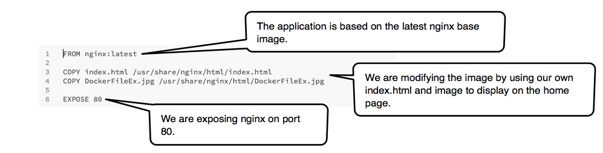

<p><h2 style="font-family:sans-serif">Hello from Hari-TCS! @ 3:50pm IST   You've successfully built and run the Hello-Demo app.</h2> </p>
<p style="font-family:sans-serif">The Hello-Demo app is a modified version of the <a href="https://hub.docker.com/_/nginx/">nginx web server image</a>. 
<p style="font-family:sans-serif"Refer hello-demo/DockerFile                          NOW     </b>, shown below:</p>

